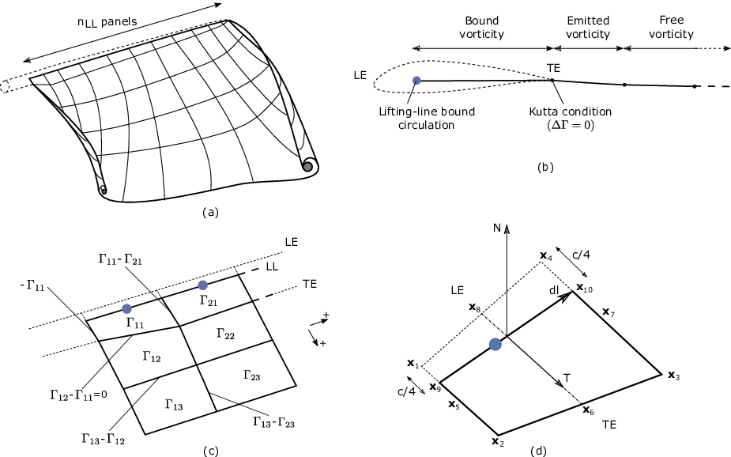

4.4.6. OLAF 이론
이 섹션에서는 OLAF 방법을 자세히 설명하고 계산 방법에 대한 개요를 제공한 다음 OpenFAST와의 통합에 대한 간략한 설명을 제공합니다.
4.4.6.1. 소개 - 와도 공식
비보존력이 없는 비압축성 균질 흐름에 대한 와도 방정식은 Eq. (4.13)
여기서, \(\vec{\omega}\) 소용돌이는, \(\vec{u}\) 는 속도이고, \(\nu\) 점도 다. 자유 와류 후류 방법에서 와도 방정식은 후류 와도의 진화를 설명하는 데 사용됩니다. 분리된 개수의 와류 요소(여기서는 와류 필라멘트)에 와도를 투영하고 점성 분할로 알려진 대류 및 확산 단계를 별도로 처리하는 등 해상도를 쉽게 하기 위해 다양한 근사치가 도입되었습니다. 이 방법에서는 몇 가지 합병증이 발생합니다. 특히, 이산화에는 원활한 근사를 보장하기 위해 와도 필드(또는 속도 필드)의 정규화가 필요합니다.
블레이드에 의해 흐름에 가해지는 힘은 와도 공식으로도 표현됩니다. 이 소용돌이는 블레이드에 묶여 있으며 양력과 관련된 순환을 갖습니다. 여기서는 리프팅 라인 공식을 사용하여 경계 와도를 모델링합니다.
구현된 자유 소용돌이 코드의 다양한 모델은 다음 섹션에 설명되어 있습니다.
4.4.6.2. 이산화 - 투영
수치적 방법은 유한한 수의 상태를 사용하여 연속 와도 분포를 모델링합니다. 이를 달성하기 위해 와도 분포는 와류 요소라고 하는 기본 함수에 투영됩니다. 여기서는 소용돌이 필라멘트가 소용돌이 장을 나타내는 요소로 사용됩니다. 소용돌이 필라멘트는 두 점으로 구분되므로 이 두 점에 의해 형성된 방향을 가정합니다. 와도관은 단위 벡터를 따라 방향이 지정됩니다. \(\vec{e}_x\) 단면의 \(dS\) 그리고 길이 \(l\). 그런 다음 길이의 소용돌이 필라멘트로 근사화할 수 있습니다. \(l\) 같은 방향으로 향하게 됩니다. 튜브와 와류 필라멘트의 전체 와도는 동일하며 다음과 같이 관련됩니다.
여기서 \(\vec{\Gamma}\) 소용돌이 필라멘트의 순환 강도입니다. 와도관이 복잡하고 큰 부피를 차지할 경우 와류 필라멘트로의 투영은 어려우며 와류 입자로의 투영이 더 적절합니다. 후류가 알려진 방향의 속도 점프를 정의하는 얇은 소용돌이 층에 국한되어 있다고 가정하면 후류 소용돌이 시트를 소용돌이 필라멘트의 메쉬로 근사화하는 것이 가능합니다. 이것이 와류 필라멘트 후류 방법의 기초입니다. 소용돌이 필라멘트는 볼륨 대신 선을 차지하므로 소용돌이 장을 단일하게 표현합니다. 와도 장을 더 잘 표현하기 위해 필라멘트가 "팽창"됩니다. 이 과정을 정규화라고 합니다(참조: 섹션 4.4.6.8). 와도 장의 정규화는 속도 장도 정규화하고 그렇지 않으면 발생할 수 있는 특이점을 방지합니다.
4.4.6.3. 리프팅 라인 표현
이 코드는 리프팅 라인 공식에 의존합니다. 리프팅 라인 방법은 블레이드의 각 단면의 하중을 블레이드의 평균 선에 효과적으로 집중시키며 각 단면의 형상을 직접적으로 고려하지 않습니다. 리프팅 라인 방법의 와도 기반 버전에서 블레이드는 다양한 순환 선으로 표시됩니다. 이 선은 블레이드의 움직임을 따르며 이를 "속박" 순환이라고 합니다. 경계 순환은 후류의 자유 소용돌이와 동일한 동적 방정식을 따르지 않습니다. 대신 강도는 Kutta-Joukowski 정리를 통해 익형 양력과 연결됩니다. 경계 순환의 경간 방향 변화로 인해 소용돌이가 후류로 방출됩니다. 이를 "추적 소용돌이도"라고 합니다. 경계 순환의 시간 변화도 후류에서 방출되는데, 이를 "흘려진" 소용돌이라고 합니다. 다음 단락에서는 구속 와도의 표현을 설명합니다.
4.4.6.3.1. 리프팅 라인 패널 및 방출 웨이크 패널
양력선과 후류 표현은 다음과 같습니다. 그림 4.15. 블레이드 리프팅 라인은 유한한 수의 패널로 분리되어 있으며 각 패널은 4면의 소용돌이 고리를 형성합니다. 스팬별 이산화는 AeroDyn 블레이드 입력 파일의 이산화를 따릅니다. 스팬방향 패널의 수, \(n_\text{LL}\)는 AeroDyn 노드의 총 개수보다 1이 적고, NumBlNds. 패널의 측면은 리프팅 라인 및 블레이드의 후행 가장자리와 일치합니다. 리프팅 라인은 현재 앞쪽 가장자리(LE)로부터 1/4 코드 위치로 정의됩니다. 패널링에 대한 자세한 내용은 다음에서 제공됩니다. 섹션 4.4.6.3.2. 주어진 시간 단계에서 각 리프팅 라인 패널의 순환은 개발된 세 가지 방법 중 하나에 따라 결정됩니다. 섹션 4.4.6.3.3. 시간 단계가 끝나면 각 리프팅 라인 패널의 순환이 후류로 방출되어 자유 와도 패널을 형성합니다. Kutta 조건을 만족시키기 위해 첫 번째 후류 패널 근처의 순환과 경계 순환은 동일합니다(참조: 그림 4.15 비). 후류 패널은 블레이드 경계층의 연속으로 인해 발생하는 얇은 전단층을 모델링합니다. 이 전단층은 와류 이중선의 연속 분포를 사용하여 모델링할 수 있습니다. 각 패널에서는 일정한 이중선 강도가 가정되며 이는 일정한 순환의 소용돌이 고리와 동일합니다.


그림 4.15 후류 및 리프팅 라인 와도는 와류 링 패널로 분리됩니다. (a) 개요. (b) 앞쪽 가장자리, 뒤쪽 가장자리 및 리프팅 라인을 정의하는 단면도. (c) 패널 순환 및 패널 사이의 와도 세그먼트에 대한 해당 순환. (d) 리프팅 라인 패널의 기하학적 수량.
현재 구현에서는 패널 모서리 점의 위치와 순환을 저장합니다. 소용돌이 링 공식에서 두 패널 사이의 경계는 두 패널 사이의 순환 차이와 동일한 강도의 소용돌이 세그먼트에 해당합니다. 패널 강도를 기준으로 세그먼트 강도를 정의하는 데 사용되는 규칙은 다음과 같습니다. 그림 4.15 기음. 경계 패널과 후류 패널 근처의 첫 번째 열의 순환이 동일하기 때문에 후연에 위치한 와류 부분에는 순환이 없습니다.
4.4.6.3.2. 판넬링
블레이드의 패널링에 사용되는 정의는 다음과 같습니다. 그림 4.15 d, van Garrel의 표기법에 따라([olaf-vG03]). 앞쪽 가장자리와 뒤쪽 가장자리(TE) 위치는 AeroDyn 메시에서 직접 가져옵니다. 두 개의 스팬 방향 위치에서 LE 및 TE는 모서리 점을 정의합니다. \(\vec{x}_1\), \(\vec{x}_2\), \(\vec{x}_3\), 및 \(\vec{x}_4\). 현재 구현에서는 공기 역학적 중심, 리프팅 라인 및 1/4 코드 위치가 모두 일치한다고 가정합니다. 특정 패널의 경우 리프팅 라인은 점으로 구분됩니다. \(\vec{x}_9= 3/4\,\vec{x}_1 + 1/4\, \vec{x}_2\) 및 \(\vec{x}_{10}=3/4\,\vec{x}_4 + 1/4\, \vec{x}_3\). 네 개의 패널 측면의 중간 지점이 표시됩니다. \(\vec{x}_5\), \(\vec{x}_6\), \(\vec{x}_7\), 및 \(\vec{x}_8\). 리프팅 라인 벡터(\(\vec{dl}\))뿐만 아니라 접선 벡터(\(\vec{T}\)) 및 일반(\(\vec{N}\))을 패널에 다음과 같이 정의합니다.
패널의 면적은 다음과 같이 구해진다. \(dA = |(\vec{x}_6-\vec{x}_8)\times(\vec{x}_{7}-\vec{x}_5)|\). 을 위한 CircSolvMethod=[1], 제어점은 해당 위치의 리프팅 라인에 있습니다. \(\vec{x}_9+\eta_j \vec{dl}\). 요인 \(\eta_j\) van Garrel의 전체 코사인 근사를 기반으로 결정됩니다. 이는 현재 패널의 스팬 방향 너비를 기반으로 합니다. \(w_j\)및 인접 패널 \(w_{j-1}\) 및 \(w_{j+1}\):
등거리 간격의 경우 이 이산화는 제어점을 리프팅 라인의 중앙에 배치합니다(\(\eta=0.5\)). 코사인 간격을 갖는 타원형 날개에 대한 이론적인 순환 결과는 제어점을 날개 말단의 더 강한 후행 세그먼트에 더 가깝게 배치하기 때문에 이러한 이산화를 통해 검색됩니다(예: [olaf-Ker00]).
4.4.6.3.3. 순환 해결 방법
결합 순환 강도를 결정하기 위해 세 가지 방법이 구현됩니다. 입력을 사용하여 선택됩니다. CircSolvMethod, 다음 섹션에 나와 있습니다.
4.4.6.3.3.1. Cl 기반 반복 방법
Cl 기반 반복 방법은 리프팅 라인에 위치한 각 제어점에서 극 데이터를 활용하는 비선형 반복 솔버 내에서 순환을 결정합니다. 알고리즘은 받음각과 극좌표 데이터를 사용하여 얻은 양력이 Kutta-Joukowski 정리로 얻은 양력과 일치하는지 확인합니다. 현재 블레이드 스팬을 따라 순환을 계산하는 것이 선호되는 방법입니다. 다음과 같이 선택됩니다. CircSolvMethod=[1]. 이 방법은 van Garrel의 연구에 설명되어 있습니다([olaf-vG03]). 알고리즘은 다음 단계를 사용하여 반복적인 접근 방식으로 구현됩니다.
추정순환으로는 이전 시점의 순환분포를 사용하고, \(\Gamma_\text{prev}\).
각 제어점의 속도 \(j\) 는 제어점 위치에서 평가된 영역의 모든 와도에 의해 유발된 풍속, 구조 속도 및 속도의 합으로 계산됩니다.
\[\begin{aligned} \vec{v}_j = \vec{V}_0 - \vec{V}_\text{elast} + \vec{v}_{\omega,\text{free}} + \vec{v}_{\Gamma_{ll}} \end{aligned}\]\(\vec{v}_{\omega,\text{free}}\) 는 Eq.에 소개된 것처럼 모든 자유 소용돌이 필라멘트에 의해 유도된 속도입니다. (4.22) . 의 기여 \(\vec{v}_{\Gamma_{ll}}\) 리프팅 라인 패널과 순환이 다음과 같이 설정된 웨이크 패널 근처의 첫 번째 행에서 나옵니다. \(\Gamma_\text{prev}\)
모든 리프팅 라인 패널의 순환 \(j\) 다음과 같이 얻어집니다.
\[\begin{aligned} \Gamma_{ll,j} =\frac{1}{2} C_{l,j}(\alpha_j) \frac{\left[ (\vec{v}_j \cdot \vec{N})^2 + (\vec{v}_j \cdot \vec{T})^2\right]\,dA}{ \sqrt{\left[(\vec{v}_j\times \vec{dl})\cdot\vec{N}\right]^2 + \left[(\vec{v}_j\times \vec{dl})\cdot\vec{T}\right]^2} } %\label{eq:} ,\quad\text{with} \quad \alpha_j = \operatorname{atan}\left(\frac{\vec{v}_j\cdot\vec{N}}{\vec{v}_j \cdot \vec{T}} \right) \end{aligned}\]기능 \(C_{l,j}\) 는 블레이드 단면의 극 데이터로부터 얻은 양력 계수입니다. \(j\) 및 \(\alpha_j\) 제어 지점의 공격 각도입니다.
새로운 순환은 완화 인자를 사용하여 설정됩니다. \(k_\text{relax}\) (CircSolvRelaxation):
\[\begin{aligned} \Gamma_\text{new}= \Gamma_\text{prev} + k_\text{relax} \Delta \Gamma ,\qquad \Delta \Gamma = \Gamma_{ll} - \Gamma_\text{prev} %\label{eq:} \end{aligned}\]수렴은 기준을 사용하여 확인됩니다. \(k_\text{crit}\) (CircSolvConvCrit):
\[\begin{aligned} \frac{ \operatorname{max}(|\Delta \Gamma|}{\operatorname{mean}(|\Gamma_\text{new}|)} < k_\text{crit} \end{aligned}\]수렴에 도달하지 못한 경우 다음을 사용하여 2~5단계를 반복합니다. \(\Gamma_\text{new}\) 순환의 추정값으로 \(\Gamma_\text{prev}\).
4.4.6.3.3.2. 무흐름 방식
무흐름 순환 해결 방법(때때로 Weissinger-L 기반 방법이라고도 함)이 향후 구현될 수 있습니다([olaf-BL94, olaf-Gup06, olaf-Rib07, olaf-Wei47]). 이 방법에서는 1/4 코드 지점에서 흐름 없음 조건을 충족하여 순환을 해결합니다. 다음과 같이 선택됩니다. CircSolvMethod=[2] 그러나 현재는 구현되지 않습니다.
4.4.6.3.3.3. 처방된 순환
사용 가능한 최종 방법은 지속적인 순환을 규정합니다. 사용자가 지정한 스팬 방향 순환 분포가 블레이드에 규정됩니다. 다음과 같이 선택됩니다. CircSolvMethod=[3].
4.4.6.4. 자유 소용돌이 대류
소용돌이 필라멘트의 지배적인 운동 방정식은 라그랑주 마커의 대류 방정식으로 제공됩니다.
여기서 \(\vec{r}\) 라그랑지안 마커의 위치입니다. 라그랑지 마커는 소용돌이 필라멘트의 끝점입니다. 필라멘트의 라그랑주 대류는 필라멘트를 늘려 와도 방정식의 변형을 자동으로 설명합니다.
현재 Runge-Kutta 4차(IntMethod=[1]) 또는 첫 번째 주문 전달 오일러(IntMethod=[5]) 방법은 방정식의 좌변을 수치적으로 풀기 위해 구현됩니다. (4.16) 소용돌이 필라멘트 위치에 대한 정보입니다. 1차 오일러 방법의 경우 대류는 다음과 같습니다. Eq. (4.17).
4.4.6.5. 극좌표의 자유 와도 대류
소용돌이 필라멘트의 지배적인 운동 방정식은 다음과 같이 주어진다:
체인 규칙을 사용하여 Eq. (4.18) 다음과 같이 다시 작성됩니다.
여기서 \(d\psi/dt=\Omega\) 및 \(d\psi=d\zeta\) ([olaf-LBB02]). 여기, \(\vec{r}(\psi,\zeta)\) 라그랑지안 마커의 위치 벡터이고, \(\vec{V}[\vec{r}(\psi,\zeta)]\) 속도입니다.
4.4.6.6. 동결 소용돌이 대류
계산 효율성을 위해 사용자는 후류 근처 및 먼 후류 구역에 "동결"된 영역을 정의할 수 있습니다. 이러한 구역에서 라그랑지 마커는 마커의 반경 위치와 잠재적으로 후류 연령의 함수와 무관한 공통 유도 속도를 사용하여 대류됩니다. 동결 영역의 라그랑지 마커의 대류 방정식은 다음과 같습니다.
여기서 \(\vec{V}_\text{avg}(t)\) 는 "자유" 마커 하위 집합의 대류 속도를 기반으로 계산된 평균 유도 속도입니다. \(k(\zeta)\) 기상 시간을 기준으로 1과 0 사이의 붕괴 인자입니다. \(\zeta\). 1의 일정한 감쇠 계수는 얼어붙은 후류를 가로지르는 균일한 대류 속도를 초래합니다. 이것은 원거리 항로에 사용되는 것입니다. 근접 후류의 경우 일반적인 값은 붕괴 계수가 동결 후류의 시작 부분에서 1이고 동결 후류의 끝 부분에서 0.5입니다. 실제로 현재 확인 결과에 따르면 \(k(0)=0.75\) 그렇지 않으면 평균 대류 속도(자유 마커의 하위 집합에 대해 계산됨)가 너무 낮아지고 얼어붙은 후류가 더 응축되어 로터에서 더 높은 유도가 발생하기 때문입니다. 분명히 평균 속도의 선택과 그 감소는 향후 릴리스에서 변경될 수 있는 튜닝 매개변수입니다. 이러한 매개변수는 현재 입력 파일에 직접 노출되지 않습니다.
일반적으로 고유한 유도 속도로 전체 "동결된" 후류를 대류시키면 약간의 오류가 발생하지만 계산 시간이 크게 단축됩니다. "동결된" 원거리 후류 지역의 장점은 잘못된 경계 조건인 후류 잘림의 영향을 완화한다는 것입니다(와류 선이 유체에서 끝날 수 없음). 후류가 여전히 "자유"인 동안 잘리면 소용돌이는 이 지역에서 자체적으로 롤업됩니다. 또 다른 장점은 확산이 없으면 후류가 하류에서 과도하게 왜곡되어 와류 필라멘트 표현의 유효성이 한계에 도달하는 경향이 있다는 것입니다.
4.4.6.7. 유도 속도 및 속도 장
Eq.의 오른쪽에 있는 속도 항. (4.16) 는 자유류와 유도 속도의 조합을 나타내는 소용돌이 위치의 비선형 함수입니다([olaf-Han08]). 지점에서 유도된 속도 \(\vec{x}\)각 직선 필라멘트에 의해 발생하는 는 라그랑지 마커의 위치와 와류 요소의 강도를 고려하는 Biot-Savart 법칙을 사용하여 계산됩니다([olaf-LBB02]):
여기서, \(\Gamma\) 는 필라멘트의 순환 강도이고, \(\vec{dl}\) 필라멘트를 따른 기본 길이입니다. \(\vec{r}\) 필라멘트의 한 점과 제어점 사이의 벡터입니다. \(\vec{x}\), 및 \(r=|\vec{r}|\) 는 벡터의 표준입니다. 점으로 구분된 필라멘트 길이에 따른 Biot-Savart 법칙의 통합 \(\vec{x}_1\) 및 \(\vec{x}_2\) 다음으로 이어진다:
함께 \(\vec{r}_1= \vec{x}-\vec{x}_1\) 및 \(\vec{r}_2= \vec{x}-\vec{x}_2\). 요인 \(F_\nu\) 정규화 매개변수입니다. 섹션 4.4.6.8.3. \(r_0\) 필라멘트 길이는 다음과 같습니다. \(\vec{r}_0= \vec{x}_2-\vec{x}_1\). 필라멘트에 직교하는 거리는 다음과 같습니다.
영역의 임의 지점에서의 속도는 모든 와류 필라멘트에 의해 유도된 속도의 중첩과 1차 흐름의 중첩에 의해 얻어집니다. \(\vec{V}_0\), (여기서는 발산이 없다고 가정함):
여기서 그 합은 모든 소용돌이 필라멘트에 대한 것입니다. 각각의 강도는 다음과 같습니다. \(\Gamma_k\). 각 필라멘트의 강도는 에서 논의된 바와 같이 경계 순환의 스팬 방향 및 시간 변화에 의해 결정됩니다. 섹션 4.4.6.3. 트리 기반 방법에서는 모든 소용돌이 요소에 대한 합이 제어점에서 멀리 있는 요소를 함께 묶어서 줄어듭니다.
4.4.6.8. 정규화
4.4.6.8.1. 정규화 및 점성 확산
Eq.에서 발생하는 특이점. (4.20) 와류 방법의 수치 정확도에 큰 영향을 미칩니다. Biot-Savart 법칙의 "1-over-r" 커널을 정규화함으로써 Navier-Stokes 방정식으로 수렴하는 수치적 방법을 얻는 것이 가능합니다. 정규화는 "진정한" 연속 와도 장과 비교하여 이산 와도 장의 규칙성을 향상시키는 데 사용됩니다. 이 정규화는 일반적으로 부드러운 함수를 사용한 컨볼루션을 통해 얻습니다. 이 경우 와도 필드와 속도 필드의 정규화는 동일합니다. 일부 엔지니어링 모델은 Biot-Savart 속도 커널의 분모에 추가 항을 직접 도입하여 정규화를 수행하기도 합니다. 요인, \(F_\nu\), Eq.에서 소개되었다. (4.21) 이 정규화를 설명합니다.
소용돌이 방법의 수렴 증명에서 정규화와 점성 확산은 두 가지 별개의 측면입니다. 규칙화 개념과 점성 확산 개념을 모호하게 만드는 것이 와류 필라멘트 방법의 일반적인 관행입니다. 실제로 물리적 소용돌이 필라멘트의 경우 점성 효과는 특이점이 발생하는 것을 방지하고 시간이 지남에 따라 소용돌이 강도를 확산시킵니다. 소용돌이 주변에서 속도가 0으로 떨어지는 원형 영역을 소용돌이 코어라고 합니다. 와류 부분의 길이가 증가하면 와류 코어 반경이 감소하고 그 반대도 마찬가지입니다. 반면에 확산은 소용돌이를 방사형으로 지속적으로 퍼뜨립니다.
이전에 언급한 비유로 인해 소용돌이 필라멘트 방법의 실무자는 정규화를 "점성 코어" 모델로, 정규화 매개변수를 "코어 반경"으로 참조하는 경우가 많습니다. 또한 점성 확산은 와도 방정식에서 확산을 해결하는 대신 공간과 시간의 정규화 매개변수를 수정하여 도입되는 경우가 많습니다. 명확한 설명이 필요한 경우 이 문서에서 구별이 명시적으로 이루어지지만, 문맥이 명확할 경우에는 느슨한 용어가 사용됩니다.
4.4.6.8.2. 정규화 매개변수 결정
정규화 매개변수는 모델링되는 물리학(블레이드 경계층 및 후류)의 함수이자 이산화 선택의 함수입니다. 기여 요인은 현 길이, 경계층 높이 및 각 와류 필라멘트가 근사하는 부피입니다. 현재 선택권은 사용자에게 있습니다(RegDeterMethod=[0]). 회전 블레이드에 대한 경험적 결과는 굽타(Gupta)의 연구에서 찾을 수 있습니다.[olaf-Gup06]). 지침에 따라 정규화 매개변수는 블레이드의 평균 스팬 방향 이산화의 두 배로 선택될 수 있습니다. 이 지침은 사용자가 선택할 때 구현됩니다. RegDeterMethod=[1]. 이 옵션의 추가 개선은 향후에 고려될 것입니다.
4.4.6.8.3. 정규화 기능 구현
여러 정규화 함수가 개발되었습니다([olaf-Ran58, olaf-Scu75, olaf-VKM91]). 현재 5가지 옵션을 사용할 수 있습니다: 1) 수정 없음, 2) Rankine 방법, 3) Lamb-Oseen 방법, 4) Vatistas 방법 또는 5) 분모 오프셋 방법. 보정 방법을 사용하지 않는 경우 (RegFunction=[0]), \(F_\nu=1\). 나머지 방법은 다음 섹션에 자세히 설명되어 있습니다. 여기, \(r_c\) 정규화 매개변수(WakeRegParam) 그리고 \(\rho\) 필라멘트까지의 거리입니다. 두 변수 모두 미터로 표시됩니다.
4.4.6.8.3.1. 랭킨
랭킨법([olaf-Ran58])는 가장 간단한 정규화 모델입니다. 이 방법을 사용하면 랭킨 소용돌이는 소용돌이 중심 근처에 고체 회전이 있고 중심에서 멀어지는 잠재적 소용돌이가 있는 유한 코어를 갖습니다. 이 방법을 사용하는 경우(RegFunction=[1]), 점성 코어 보정은 Eq. (4.23).
여기서, \(r_c\) 는 와류 필라멘트의 점성 코어 반경입니다. 섹션 4.4.6.8.4.
4.4.6.8.3.2. 양고기-오센
Lamb-Oseen 방법을 사용하면 [RegFunction=[2]], 점성 코어 보정은 Eq. (4.24).
4.4.6.8.3.3. 바티스타스
바티스타스 방식을 사용하는 경우 [RegFunction=[3]], 점성 코어 보정은 Eq. (4.25).
여기서, \(\rho\) 는 소용돌이 부분에서 임의의 지점까지의 거리입니다([olaf-Abe16]). 회전익 항공기 응용 분야에 대한 연구는 다음의 가치를 제시합니다. \(n=2\), 이 작업에 사용되는 ([olaf-BL93]).
4.4.6.8.3.4. 분모 오프셋/컷오프
분모 오프셋 방법을 사용하는 경우 [RegFunction=[4]], 점성 코어 보정은 Eq. (4.26)
여기서는 식의 분모에 덧셈 인자를 도입하여 특이점을 제거한다. (4.21), 필라멘트 길이에 비례 \(r_0\). 이 경우, \(F_\nu=1\). 이 방법은 van Garrel([olaf-vG03]).
4.4.6.8.4. 정규화 매개변수의 시간 진화 - 코어 확산 방법
정규화 매개변수가 시간에 따라 발전할 수 있는 네 가지 방법은 1) 상수 값, 2) 스트레칭, 3) 웨이크 에이지 또는 4) 스트레칭 및 웨이크 에이지입니다. 후자의 세 가지 방법은 점성 확산과 정규화의 개념을 혼합합니다. 표기법 \(r_{c0}\) 이 섹션에 사용된 것은 입력 파일 매개변수 값에 해당합니다. WakeRegParam.
4.4.6.8.4.1. 끊임없는
상수 값을 선택하면 (WakeRegMethod=[1]), 값 \(r_c\) 시뮬레이션 전반에 걸쳐 모든 라그랑지안 마커에 대해 변경되지 않고 유지되며 매개변수와 함께 제공된 값으로 사용됩니다. WakeRegParam 미터 단위.
여기서, \(\zeta\) 방출 시간으로 측정된 소용돌이 후류 연령입니다.
4.4.6.8.4.2. 스트레칭
스트레칭 방법을 선택한 경우 (WakeRegMethod=[2]), 점성 코어 반경은 Eq. (4.28).
여기서, \(\epsilon\) 소용돌이 필라멘트 변형률입니다. \(l\) 필라멘트 길이이고, \(\Delta l\) 두 시간 단계 사이의 길이 변화입니다. 식의 적분. (4.28) 변형 효과를 나타냅니다.
이 옵션은 아직 구현되지 않았습니다.
4.4.6.8.4.3. 웨이크 에이지 / 코어 확산
Wake Age 방식을 선택한 경우, (WakeRegMethod=[3]), 점성 코어 반경은 Eq. (4.29).
여기서 \(\alpha=1.25643\), \(\nu\) 는 동점도이고, \(\delta\) 점성 확산 매개변수입니다(일반적으로 \(1\) 및 \(1,000\)). 매개변수 \(\delta\) 입력 파일에 다음과 같이 제공됩니다. CoreSpreadEddyVisc. 여기서 용어는 \(4\alpha\delta\nu \zeta\), 후류가 하류로 전파됨에 따라 점성 효과를 설명합니다. 배경 난류가 높을수록 시간에 따라 소용돌이도가 더 많이 확산되고 값이 높아집니다. \(\delta\) 되어야 한다. 이 방법은 후류 와도 자체 또는 후류 와도와 배경 흐름 사이의 상호 작용을 무시하면서 와도의 점성 확산을 부분적으로 설명합니다. 흔히 코어 확산 방식이라고 합니다. 환경 DiffusionMethod=[1] wake age 방법을 사용하는 것과 동일합니다(WakeRegMethod=[3]).
코어 반경의 시간 변화는 다음과 같이 구현됩니다.
및 \(\frac{d r_c}{dt}=0\) 블레이드에.
4.4.6.9. 확산
점성 분할 가정은 와도의 대류와 확산을 별도로 해결하는 데 사용됩니다. 확산 기간 \(\nu \Delta \vec{\omega}\) 분자 확산을 나타냅니다. 이 항은 와도선의 점성 연결을 허용합니다. 또한 난류 흐름은 난류 소용돌이 점도를 기반으로 비슷한 방식으로 와도를 확산시킵니다.
매개변수 DiffusionMethod 점성 확산 방법을 전환하는 데 사용됩니다. 현재는 코어 확산 방식만 구현됩니다. 방법은 다음에 설명되어 있습니다. 섹션 4.4.6.8.4 왜냐하면 이는 기상 시간에 따른 정규화 매개변수의 증가와 동일하기 때문입니다.